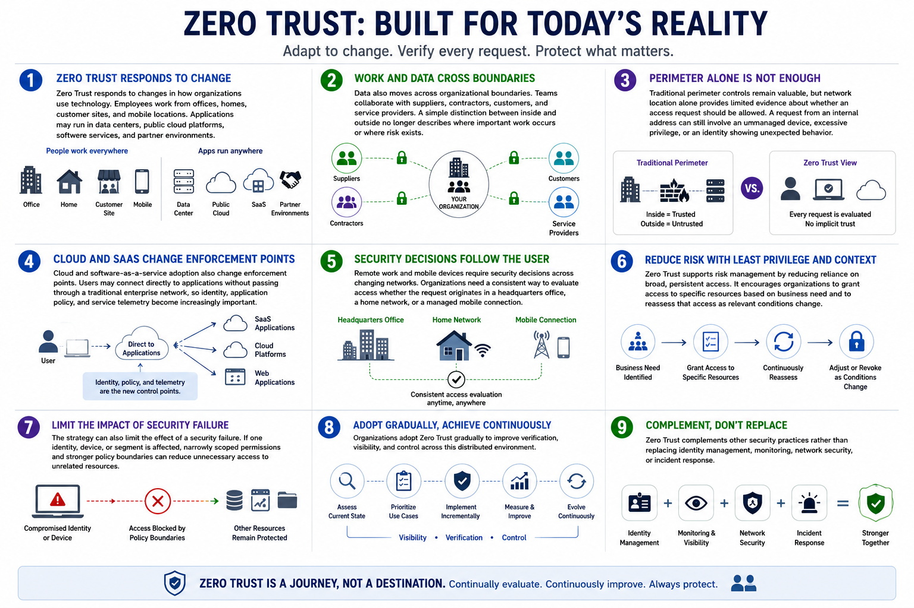

What Is Zero Trust?
Why Zero Trust Exists
Connecting to LMS... Progress: in progress
Version 1.0 | Date: 2026-06-16 | Educational overview of Zero Trust concepts.

Narration
Zero Trust responds to changes in how organizations use technology. Employees work from offices, homes, customer sites, and mobile locations. Applications may run in data centers, public cloud platforms, software services, and partner environments.
Data also moves across organizational boundaries. Teams collaborate with suppliers, contractors, customers, and service providers. A simple distinction between inside and outside no longer describes where important work occurs or where risk exists.
Traditional perimeter controls remain valuable, but network location alone provides limited evidence about whether an access request should be allowed. A request from an internal address can still involve an unmanaged device, excessive privilege, or an identity showing unexpected behavior.
Cloud and software-as-a-service adoption also change enforcement points. Users may connect directly to applications without passing through a traditional enterprise network, so identity, application policy, and service telemetry become increasingly important.
Remote work and mobile devices require security decisions across changing networks. Organizations need a consistent way to evaluate access whether the request originates in a headquarters office, a home network, or a managed mobile connection.
Zero Trust supports risk management by reducing reliance on broad, persistent access. It encourages organizations to grant access to specific resources based on business need and to reassess that access as relevant conditions change.
The strategy can also limit the effect of a security failure. If one identity, device, or segment is affected, narrowly scoped permissions and stronger policy boundaries can reduce unnecessary access to unrelated resources.
Organizations adopt Zero Trust gradually to improve verification, visibility, and control across this distributed environment. It complements other security practices rather than replacing identity management, monitoring, network security, or incident response.